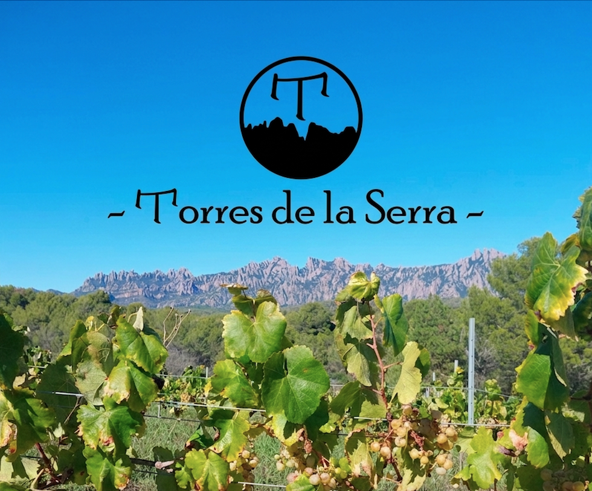
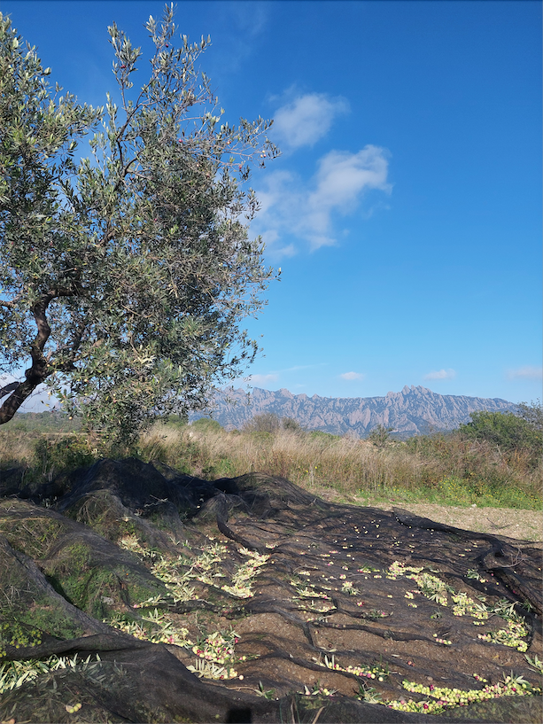

Vins naturals i oli verge extra elaborats al parc rural de Montserrat
Un projecte familiar que honora la terra, el temps i el mètode artesanal.
Descobreix els nostres vins
AgriCULTURA
Treballem petites parcel·les amb respecte absolut pel cicle de la vinya i l'olivera. Sense pressa, sense dreceres. Cada ampolla és el resultat d'un any de feina a camp i la paciència d'esperar que el vi i l'oli s'expressin tal com són.
Respecte pel cicle
Sense herbicides, sense pesticides sistèmics, llaurat mínim.
Mètode ancestral
Fermentació espontània amb llevats indígenes. Sense sulfits afegits.
Petita escala
Cada ampolla passa per les nostres mans.
Quatre vins, quatre personalitats

Arbequina d'oliveres centenàries
Premsat en fred per mètodes mecànics d'oliveres multiedat, algunes centenàries. Un oli verd, fruitat i amb la dolçor característica de l'Arbequina mediterrània.

Una finca al parc rural de Montserrat
Vam arribar a aquesta terra el 2015. Des d'aleshores, no hem deixat de plantar, d'injertar, de provar, d'aprendre.